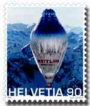

|
 |
New Issues and their Value
Does the value of stamps, recently bought at post offices, increase with the time? Is it a good business to invest in modern stamps, combining this way the useful with the pleasant? Many stamp collectors are confronted with these questions, which this article will try to answer.
Let's start with an example of a kind of publicity that can lead many beginners into error. It was used this year (2000) by an important philatelic company, having a good reputation.
The publicity says: "For all those who collect with pleasure: TODAY POSTAGE FOR COVERS - TOMORROW VALUABLE PIECES OF COLLECTION." This can mislead one into thinking that these stamps will be more valuable in the future than they are today, an issue this short article deal with; some conclusions will be drawn towards the end of it.
Everybody knows that old stamps are valuable, don't they? An immediate consequence is that when the actual stamps will be a bit older, they will increase their value too, like the old ones did in time. Both sentences above are false. Unfortunately many stamp collectors, who didn't know it early enough, renounced at stamp collecting just because of such false expectations. The goal of this article is to prevent such disappointments and to make stamp collectors as happy as possible with their hobby, or even happier.
Generally speaking, the old stamps are not expensive, only some of them. The expensive ones are those existing in small quantities, as compared to today's philatelic demand, that's why they are called rare stamps. Generally speaking again, the stamps of the last 20-30 years are not much more valuable today than they were at their issuance. The fact is, many of them can be bought even under their face value. A somehow extreme example is that of some quite old 3c US stamps, that can be obtained at 60% of their face value, simply because it is very unpractical to use them for postage (usually not enough place on a cover, considering the actual postal rates).
This doesn't mean that some modern stamps haven't sensibly increased their value in time, but such cases are rather exceptions from the general rule. Please find below listed some reasons for increased prices:
1.
A very high demand, that wasn't satisfied by the postal authorities
2. Small quantities were produced, due to technical errors or for other
(for example political) reasons
2. The quantity of certain stamps was artificially held low
4. Corruption at printing offices, for example small quantities of
imperforated stamps that shouldn't exist at all, etc.
Usually only experienced dealers, stamp collectors who can afford higher prices, or persons of doubtful morality (case 4.) come into possession of such stamps.
I give below three examples of popular stamps, two issued by Switzerland and one issued by the United States, in order to show different approaches in marketing politics of postal administrations, each one with its advantages and disadvantages in what concerns the future prices and the future availability of their products.
|
 |
The left stamp on the above FDC, issued by Swiss post in 1988, displays a painting of the Swiss artist Jean Tinguely, a work named Metamécanique. Even if about 6.5 millions were issued, its price in Switzerland became four times higher than that of similar stamps (Fr. 8.50 in the Swiss catalogue Zumstein 1998, as compared with Fr. 2.00 for the other ones, issued in the same lapse of time). Just to notice that this difference cannot be observed in Scott 1999 ( No. 828, $1.20, a normal price). The reasons for the popularity of this stamp were the accessible face value, an attractive design, interesting topics covered (art, joint issue) and the unusually big size for a Swiss stamp. We are here in the case 1., that of a high demand. The demand has progressively risen and the Swiss postal authorities haven't changed the initially foreseen quantity, a politics that can be perfectly justified.
The Swiss Postal Administration made a big effort and issued in 1999 a stamp dedicated to the non-stop flight around the world only three days after the successful landing (see above, on the right). It took two days and two nights to make ready a print of 5 million stamps, a rather normal quantity for a Swiss commemorative stamp. The whole quantity sold-out in Switzerland in only two hours, thanks to the enormous interest of the Swiss population for the adventure and thanks to an intelligent publicity made for the stamp. Due to an abrupt increase of demand, a second print was made available at post offices two weeks later. This stamp is still available at face.
On the left you can admire the US stamp showing the pop singer Elvis Presley. The US Post held a poll to choose the design of this stamp. For some reasons (my guesses: nice guy, very popular worldwide, good design, issued by his native country), it has become the best-selling commemorative stamp of all time, with over 500 millions pieces sold. Due to this enormous quantity, this stamp will never get rare, probably will not even get scarce.
The advantages of large printed quantities:
Many people can get the stamps and are probably happy with their possessions
Others can still easily find them on the market
The issuing administrations make better profits, due to larger quantity that can be sold
Disadvantages of large quantities
Such stamps won't become more interesting in time, due to their general availability
To many people, this makes the stamp collecting less exciting
For this reason (among others) many stamp collectors avoid the new issues and concentrate themselves on the old(er) ones
Final Conclusions and Tips
General rule: buy only what you really like and in quantities you need
Even if many modern stamps will not increase their value, if you like them, buy them when they are issued. This way you have them for sure, at correct prices, and you give a positive sign to issuing authorities
When possible (take into consideration the postage fees and the supplementary costs), buy stamps directly from the postal authorities of issuing countries
Don't buy stamps, especially new issues, with the idea to make money later; usually you won't
Don't buy more than you need, either for speculation, or even for future trades (new issues or older stamps alike). You will seldom have what others need; it is better, for particular trades, to buy stamps from dealers instead of making personal stocks
And last, but not least, think twice when you interpret the publicity, even serious sources can be biased, because they follow their specific interests, which don't coincide permanently and in all respects with those of stamp collectors.
Do you like this article? Or on the contrary do you have serious objections? Make use of PASIC Forum to express your opinion or send an e-mail to its author.
| First
version: 7/10/00. Revised:
11/27/05. Copyright © 2000 by Victor Manta, Switzerland. All rights reserved in all countries. |
|